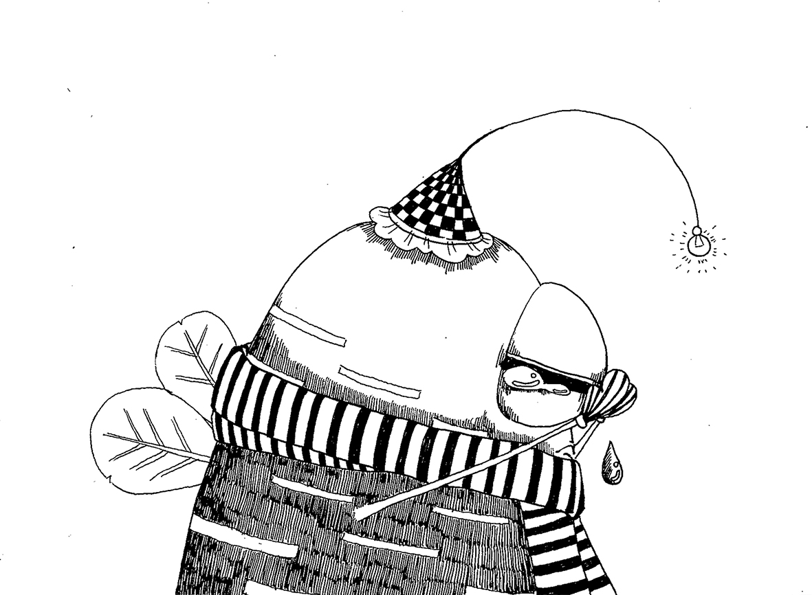

DAY 1

The first project is a special map of my community. Though seems like a metro map, it is actually a map which illustrated the routes of different kinds of cars and different people. The starting point of making this project is that one day I noticed all kinds of vehicles have a relatively fixed route here because of the regulation of the community. For instance, motor vehicles are only allowed to drive in the 4 arch loop roads, which is the outermost part of the ‘traffic system’ of community, while the cleaner cars only clean the on those main roads which diverging from the middle area. For people walking in the community, those routes are more random and unpredictable, but there are also some common rules for it. The rule of dogs not allowing to go to the center OVAL part and the location of the sunbath area form the routes of dog-walking and sunbath.
The first project is a special map of my community. Though seems like a metro map, it is actually a map which illustrated the routes of different kinds of cars and different people. The starting point of making this project is that one day I noticed all kinds of vehicles have a relatively fixed route here because of the regulation of the community. For instance, motor vehicles are only allowed to drive in the 4 arch loop roads, which is the outermost part of the ‘traffic system’ of community, while the cleaner cars only clean the on those main roads which diverging from the middle area. For people walking in the community, those routes are more random and unpredictable, but there are also some common rules for it. The rule of dogs not allowing to go to the center OVAL part and the location of the sunbath area form the routes of dog-walking and sunbath.
DAY 2
After finished the last project, I realized that there are so many fun things I can explore even in a small community. I started to collect some special stuffs near my home, and I got some little stones, fallen leaves and a express waybill. They are fun materials but not what I need for my projects. Finally what I got was some audio from different places in the community. Because those audio sounds really different depends on the place you are. If you record it near the fountain, it will sounds like heavy rain, and the voice near my home where surrounded by many trees is more gentle and quiet.
It is really fun to find that there is a special ‘voice identity’ for every single places. Those subtle differences make a place special. As the execution part, I originally planned to make the identity for those places, but the technical problem about voice visualization make it hard to finish in one day. As a result, I just choose to use the processing to draw some sound waves to show the different voice identity of places. Two typical places( fountain and trees) are chosen to make the project. I used different lightness and scale of the waves to show the difference between different places. Though I am not be able to make a real voice identity in the best way, I am still really interest in the possibility of it. I was wondering if it possible to make a treasure hunt game which use the voice as a hint for the player to find the specific place. I wish I will have appropriate time to try in in next few days or in the future.
DAY 3
At day 3, I continued my exploration in my community. When I walked around the fountain, some graffitis on the ground grabbed my attention immediately. Those graffiti are not very delicate or fancy, they have just been draw on the ground by chalks casually. Some of them are figure painting and others are rather abstract. One common point about all these graffitis is that they are obviously drew by children. Most of them are really creative and some of them are even practical (there are a mock racing track which consisted of a starting line, finishing line and cheer up words on the ground).
Been attracted by those fun creative graffitis, I determined to combine my project with them. They just demonstrated the saying of Picasso which was ‘All children are born artist, the problem is to remain an artist as we grow up.’ So it would be a fun idea for me to treat those graffitis just like real art work in galleries and give them a sense of ritual. Then I used some simple material I have to make frames for these masterpieces and write the labels which makes them more like a real painting work. I even added a simple transparent film to the frame which would be placed closed to the fountain. After finishing the making part, I just put the frames and labels in the proper place and waited for people to appreciate the ‘ground gallery ’. It is great that there are many people really appreciated those graffitis and read those labels. The responses of audience make up the whole project.
DAY 4
Receive my package from Amazon, I am be able to use LEGO bricks and some new sensor/module to do the project today. I start thinking about make a container to store my coins(I always got many coins as change after shopping, and the small ones are really hard to use in most cases). I used LEGO bricks to make a simple saving-pot and add some more function to it through arduino. A pressure sensor have been placed in the bottom of the saving-pot and a LED light is on the top of it. Once the saving-pot collected enough coins the light will be lighten.